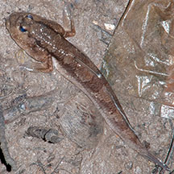
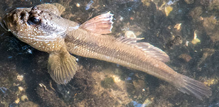
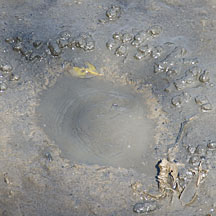
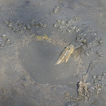
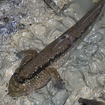
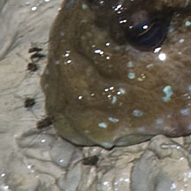
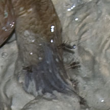

|
|
| fishes text index | photo index |
| Phylum Chordata > Subphylum Vertebrate > fishes > Family Gobiidae > mudskippers |
| Giant
mudskipper Periophthalmodon schlosseri Family Gobiidae updated Sep 2020
Where seen? This large mudskipper is often seen in mudflats and the back mangroves of our Northern shores. At low tide, large ones are often seen in or near their 'swimming pool'. At high tide, they may be seen clinging to mangrove tree roots. Features: 15-27cm long, it is the largest of our mudskippers. It has a black stripe along the side of its body. At night, it may have additional dark bars across the back. Sometimes confused with the Yellow-spotted mudskipper which were long mistaken for juvenile Giant mudskippers. Unlike the Giant mudskipper, the Yellow-spotted mudskipper does not have a broad black band along the body length and lacks the white-bluish, iridescent speckles often seen on the Giant mudskipper's cheeks. |
 Night pattern: additional dark bars. Pasir Risk Park, Dec 12 |
 Day pattern: dark stripe along the body. Pasir Ris Park, Feb 12 |
| Baby giants: Possible courtship behaviour was reported, with two fishes stayed close together, but neither of them having the typical dark stripe along the body. The male builds deep burrows in the mud as a nursery for its young. A 'swimming pool' is constructed at the opening of the burrow. The female lays eggs in the burrow which are fertilised by the male. During the breeding season, both the male and female may live in and maintain the burrow. The male cares for the eggs by gulping air in his mouth and releasing it inside the burrow so that the eggs remain well oxygenated. The eggs hatch and develop from the larval stage to juveniles inside the burrow. |
 A tunnel at the base of the 'swimming pool'. Sungei Buloh Wetland Reserve, Feb 12 |
 Swirling at the base of the pool face down. Sungei Buloh Wetland Reserve, Feb 12 |
 Then spitting out a mouthful of mud. |
|
 Pasir Ris Park, Feb 12 |
 The poor fish often a target of mosquitoes! |
 |
| What does it eat? An aggressive
hunter, it eats crabs (one study found it prefers crabs) as well as prawns, worms and insects. It may even
snack on smaller mudskippers, and one was observed eating a snake. One study found that it eats mostly fiddler crabs, Medaka fish (Oryzias sp.) and juvenile fishes. In turn, the fish is preyed upon by the Dog-faced water snake, and birds such as herons, kingfishers. The fish is often seen with mosquitoes biting parts of its body above water. Status and threats: The Giant mudskipper is listed among the threatened animals of Singapore, mainly due to habitat loss. Indeed, it is only common where suitable habitat occurs, and such habitats are disappearing. |
| Giant mudskippers on Singapore shores |
On wildsingapore
flickr
|
| Other sightings on Singapore shores |
| Filmed at Pasir
Ris, Dec 10. mudskipper w mozzies from SgBeachBum on Vimeo. |
| Filmed at Pasir
Ris, Dec 10. mudskippers & mosquitoes from SgBeachBum on Vimeo. |
|
flied giant mudskipper @ SBWR from SgBeachBum on Vimeo. |
Links
|